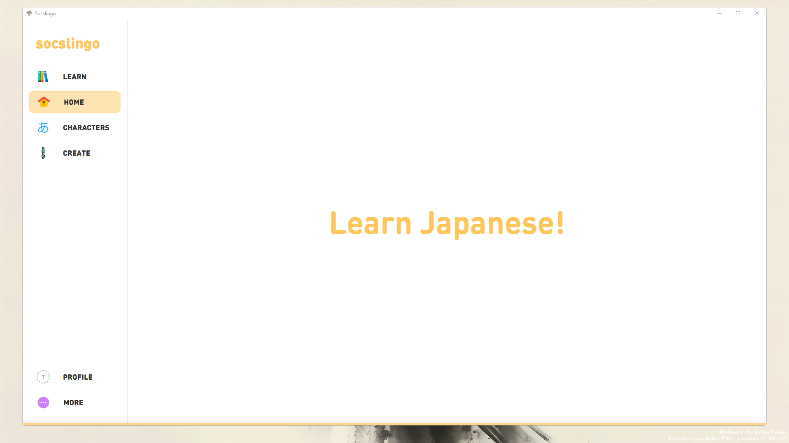

Hello there, I'm a
student passionate about
using machine
learning to better
the human experience.
Seek Music
Python | HTML | CSS | JavaScript |
2023 | 6 Weeks
Seek Music is an online platform I developed as a project for the IAB207 Rapid Web Application Development course, a first-year second-semester unit at Queensland University of Technology (QUT). This project was my first introduction to using HTML, CSS, SQLite, and Python Flask. Flask was used to, manages database operations, implements a basic search engine, and dynamically renders content. The website allows users to search for and book tickets to concerts across various genres and locations in Australia. Additionally, it allows anyone to create events, book tickets, and manage their accounts.
socslingo
Java | JavaFX | SQLite | CSS |
2024 | 6 Weeks
Socslingo is an interactive language-learning platform I developed to help users improve their character recognition skills, particularly for scripts like Japanese Hiragana and Katakana. Built with JavaFX, it integrates with a database to store user profiles, flashcards, and progress statistics. The application provides dynamic quizzes, flashcard management, and animated interactions, enabling learners to practice characters, track their improvement, and adapt their study strategies. By supporting user account creation and customisation, Socslingo ensures a personalised and engaging environment for mastering character sets.

Useful
Human centric
Simple
Well made
My approach to work and projects is fundamentally driven by a relentless commitment to meaningful impact and execution. I prioritise momentum, decisive action, and high project velocity. Success is something I take seriously, approaching it with focus and intent. When I commit to a project, I take full ownership of its trajectory, embracing every challenge as an opportunity to innovate and overcome. I'm willing to step outside traditional boundaries and defined roles to ensure we achieve our objectives. I thrive on bringing ambitious ideas to life, understanding that speed and adaptability are critical to maintaining momentum. I'm deeply convinced that great achievements are always the result of collective effort. Success demands an ambitious, high-performing team united by a shared vision and a clear sense of purpose. My pragmatic approach ensures I'm flexible and adaptive, discarding and exploring entirely new methodologies and strategies to the specific demands of each project. I don’t hesitate to take on additional responsibilities or tackle unforeseen challenges if it propels the initiative forward. For me, project success isn't just about completion—it's about creating a substantial, meaningful impact that truly moves the needle and drives forward progress.
I’m heading into my third year pursuing a degree in Computer Science, with a second major in Computational and Simulation Science. Over this time, I’ve been building a diverse range of technical skills—using Java for creating desktop applications with JavaFX for user interfaces and managing backend logic, Python for web services with Flask and SQL Alchemy, C# alongside other languages for developing a solid understanding of algorithms and problem-solving, and HTML and CSS for crafting front-end interfaces. While I’ve used Bootstrap, I prefer writing my own CSS for better control and customisation. My database experience includes designing and managing SQLite databases, often adapting designs on-the-go to meet project demands due to tight deadlines, often driven by the ambitious scope of the projects. I’ve also worked with Figma for UI design, primarily because it allows me to quickly identify and address UI or UX issues. It’s much easier to adjust designs in Figma to see how changes would look, compared to altering them programmatically and then evaluating the results. Using Figma saves time and streamlines the design process both before and during implementation. I first developed a foundational understanding of coding through learning C in the CS50 course by David J. Malan, which provided me with a solid grounding in programming principles and problem-solving.
Queensland University of Technology
Student
Learning abunch of different things in computer science
“Tai's innovative thinking and problem-solving skills have been a great asset to our team. Their ability to tackle complex challenges is remarkable.”
John Cena WWE Senior Software Engineer
“Tai's dedication and enthusiasm have been truly inspiring. Their contributions have significantly enhanced our projects.”
Barack Obama Placeholder
At this time I'm working on a few projects, writing past project retrospections on GitBook, learning basic ml concepts and exploring new opportunities. (My Blog)